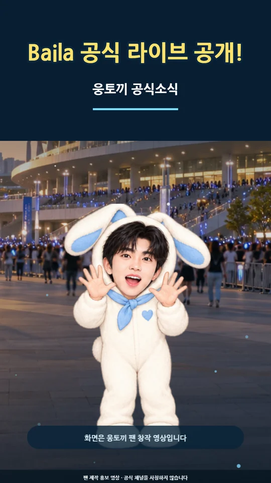

EP. 0125 SEC임영웅 ‘Baila’
공식 라이브 공개
스타디움의 설렘을 담아 웅토끼가 공식 라이브 소식을 전합니다. 마지막 건행 인사까지 25초로 구성했습니다.
WOONG RABBIT · OFFICIAL NEWS
문구만 바꾸는 반복 영상이 아닙니다. 새 소식의 내용과 분위기에 맞춰 장면, 웅토끼의 행동, 자막과 나레이션을 매번 새롭게 구성합니다.
완성 소식 보기 ↓
새 소식!
제가 전해 드릴게요
OFFICIAL NEWS COLLECTION

EP. 0125 SEC스타디움의 설렘을 담아 웅토끼가 공식 라이브 소식을 전합니다. 마지막 건행 인사까지 25초로 구성했습니다.
HOW TO ADD A NEW STORY
이 페이지에서 직접 글자만 바꾸는 방식이 아닙니다. 저에게 정보를 보내 주시면 소식에 맞는 전용 영상을 만들고 여기에 한 편씩 쌓아 드립니다.
WHAT TO SEND
예: “새 콘서트 일정이 공개됐어. 이 공지로 웅토끼 공식소식 2편을 만들어줘.”